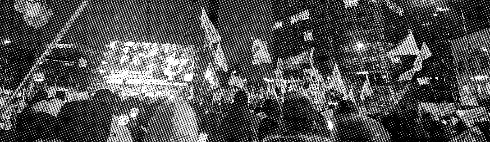

02
광장의
광장의
플레이리스트
저항은 때로 가장
힘 있는 축제가 된다.
경직된 시위 문화에서 탈피하여 시민들이 함께 호흡하고 에너지를 충전할 수 있는 유연한 광장을 조성한다.
함께 고르는 노래 : 주최 측의 일방적인 음악 송출 대신 현장 시민들이 실시간으로 투표한 '오늘의 신청곡'을 공유한다. 이는 시민을 단순한 참여자에서 광장의 주인공으로 전환시키는 장치이다.
빛으로 만드는 파도 : 디지털 응원봉 또는 스마트폰 화면이 음악 리듬에 맞춰 동기화된 색상으로 변한다. 수만 개의 빛이 일제히 반응하는 순간을 통해 공동체적 결속력을 시각적으로 체감한다.
일상의 언어로 소통 : 과격한 구호 대신 유행어 혹은 재치 있는 문구를 화면에 띄워 공유한다. 누구나 쉽게 즐길 수 있는 분위기 속에서 민주주의 가치를 일상화한다.
